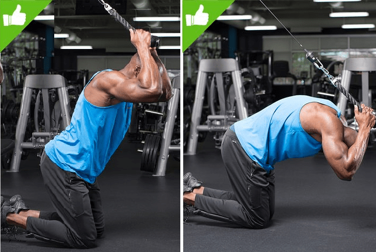

Cable Crunches
- Equipment Needed:
- Cable Machine
- Steps to perform:
- Set wieght and place cable high
- Kneel on ground and cgrab cable near top of head
- Curl torso in complete range of motion and return to start position
- Repeat until desired number of reps are completed